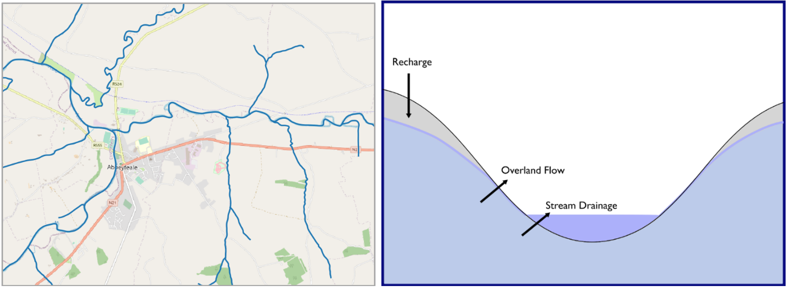
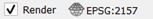
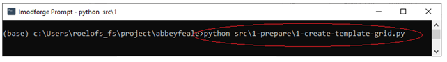
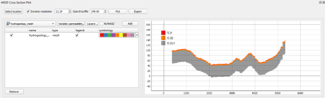
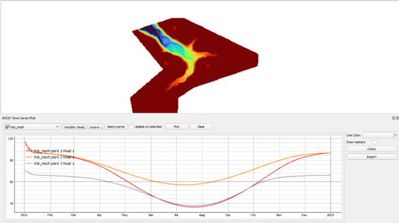

Abbeyfeale
[NB. Windows 8.1 is not supported]
Topics
In this tutorial, you will learn the following:
- Basic usage of QGIS
- Draw a cross-section in the iMOD QGIS plugin
- View time series in the iMOD QGIS plugin
- Run a Python script in a shell
Objective
In this Tutorial you learn the basics of iMOD-Suite. Therefore, we load and analyze a few file types. The files describe geohydrologic datasets for an area in the town of Abbeyfeale, Ireland. For this area we will develop a simple groundwater model using Python. Therefore, we start a command prompt for Python. From that command prompt you will run 7 prepared Python scripts. Each script handles a single step in the MODFLOW 6 modelling process: the preprocessing of basic data, the creation of MODFLOW 6 input files, running of the MODFLOW6 model and analyzing the results. The files created with each step are analyzed in QGIS.
Introduction: schematization ground water model Abbeyfeale
Abbeyfeale is a historic market town in the County Limerick, Ireland. The local authorities are worried about the effects of drier summers on groundwater levels. A simple groundwater model can provide them with a quantification of the expected groundwater level decline. Geology: much of Ireland can be considered as relatively glacial subsoil (typically < 15 m thick) overlying very hard old fractured rock. For basic models this can be represented as one layer for the subsoil and one layer for bedrock.

Getting Started
- Launch QGIS from your START menu, your desktop or click on …\QGIS3.24.0\bin\qgis-bin.exe.
Intermezzo QGIS language Perhaps your QGIS was installed in another language than English. Because the Tutorial refers to the English version, let’s change than to English.
- From the main menu click on Settings and select Options. (e.g. in Dutch Extra and Opties)
- In the new window go to the General section on the left.
- From the drop-down menu “User interface translation” select American English and click on OK.
- Close QGIS and open it again to activate your language change.
We start with the creation of a new QGIS project.
- From the main menu click on Project and select New.
The data we use in this part of the training is from Ireland, so next we select the appropriate projection.
- From the main menu click on Project and select Properties.
- In the Properties window select the category CRS, search for “EPSG:2157” and you find “IRENET95 / Irish Transverse Mercator”. Select this option and click the Apply button, followed by the OK button to close the window.
For navigation purposes, let us load the universal topography of Open Street Map. (OSM)
- Check on the left site if the panel “Browser” is available. If not, select View from the main menu, go to Panels and select Browser Panel.
- The Browser panel contains the group XYZ Tiles. From that group double click on the item OpenStreetMap. This layer is now added to the panel Layers. To display this dataset an internet connection is needed. So if that is the situation, you will see the world map in the display.
Let us now open a series of basic files in QGIS. We start with a digital elevation map.
- Go to Layer in the main menu, select Add Layer and pick the option Add Raster Layer.
- In the section Source click on the button and select the file “…\abbeyfeale\data\1-external\topography\Abbeyfeale DTM.tif”. GeoTIFF is a common file format.
- Click the Add button and the layer is added to the panel Layers.
- Click Close to leave the window.
- In the panel Layers select the layer “Abbeyfeale DTM” and click the button to zoom in to the layer.
We see the contours of a river, but the legend is gray only by default. Let’s change that.
- Double click on the layer “Abbeyfeale DTM”. The window “Layer Properties” opens.
- Select the group Symbology.
- From the dropdown Render Type select the type Singleband pseudocolor.
- Be sure a Color Ramp is selected as well.
- Make sure the dropdown menu Interpolation shows Linear and the dropdown menu Mode shows Continuous.
- Click Apply to change the colors and OK to close the window.
- You can zoom in and out with the scroll button on your mouse or navigate with the buttons in the main menu:

Your screen might look like Figure 2

Let us save this project to be able to return to is later or in case of a crash of QGIS.
- Go to Project in the main menu, select Save As and select a folder and a file name for your project, e.g. “…\abbeyfeale\tutorial1.qgz”
Do you like to see the values of the DTM under you mouse? You need a QGIS plugin “Value Tool”. Many additional helpful tools are available as QGIS plugin, just like our iMOD Plugin.
- Go to Plugins from the main menu and select Manage and Install Plugins… and a window opens.
- On the left, select the group All to see all available plugins.
- Search for “iMOD” and see that the iMOD plugin is successfully installed.
- Check if version 0.2.2 is installed. If not, click the button to Upgrade the iMOD Plugin.
- Search for “Value Tool”, install it and Close the Plugins window.
The tool is now visible as a panel on the left and as the Value Tool button ( ) in a panel on the top of QGIS.
) in a panel on the top of QGIS.
- Hover over the DTM and in the “Value Tool” panel you see the value at your mouse location.
Next step is to load a polygon file representing the recharge zones in the project area.
- Go to Layer in the main menu, select Add Layer and pick the option Add Vector Layer.
- In the section Source click on the button and select the file “abbeyfeale\data\1-external\recharge\clipped_recharge.shp”. The ESRI Shapefile is a common file format.
- Click the Add button and the layer is added to the panel Layers.
- Click Close to leave the window.
We see the contours of zones with a single color. Let’s change that.
- Double click on the layer “clipped_recharge”. The window “Layer Properties” opens.
- Select the group Symbology.
- From the upper dropdown menu select Categorized. From the dropdown Value select RECH_MM_YR and from the dropdown Color ramp select Viridis. Click on the button Classify to create the legend.
- Click Apply to change the colors and OK to close the window.
There is also an ESRI Shapefile with the rivers in the project area. Feel free to download that file (“abbeyfeale\data\1-external\rivers\WATER_RivNetRoutes.shp”) in the same way.
After loading raster and polygon layers, let us now load a point file with boreholes. This time, the file format (*.IPF) is not a common file standard but developed by Deltares because the file includes associated borelog information. We must load the IPF file with the iMOD plugin.
- One of the QGIS toolbars is the iMOD Toolbar. There you find al the iMOD plugin tools. Click on the Open IPF button (
 ) and a window will open.
) and a window will open. - Click on the button and select the IPF “abbeyfeale\data\1-external\boreholes\BOREHOLES.IPF”.
- Click the Add button and the IPF file is added in the panel Layers.
NOTE: If the points appear to be somewhere else on the map, e.g. Africa, make sure both your project and your layer have the correct CRS (EPSG:2157).
- Check if the project CRS on the lower right corner still is . Otherwise double click this area and change the EPSG.
- Check if the layer CSR is correct and therefor double click on the BOREHOLES layer.
- In the window Layer Properties go to the section Source.
- In the dropdown menu “Assigned Coordinate Reference System (CRS)” select EPSG:2157.
- Right-click BOREHOLES.IPF in the Layers panel and click “Show labels”. This will label the points with the borelog identifier.
The bore log for each borehole can only be displayed in a cross-section. Therefore, we activate the iMOD cross-section tool.
On the iMOD Toolbar select the Cross section button () to start the iMOD Cross Section tool. In the empty cross-section we can add a selection of (geological) layers. For now, we only select the boreholes.
Click on the button Select location and draw your cross-section line from north to south over the 3 central borehole locations. Add points to the line with your left mouse button and close the line with the right button. You can remove and redraw the line by clicking the Select location button again.
In the field Search buffer increase the buffer along the line to 1000m. Now a yellow shade is visible around your line selecting all the available points within.
From the dropdown menu on the left, select the layer BOREHOLES if not selected already. From the borelog we want to plot the variable LITHOLOGY, which is selected already while it is the only available variable.
Click the button Add to add this layer to the cross-section manager.
Click the button Plot to draw this layer in the cross section.
Your screen might look like Figure 3 although the colors are different than in your screen. Feel free to use the column Symbology to change the legend.
NOTE: If no lines appear on your screen, make sure you have set your project CRS to EPSG:2157 (see earlier step).

For now, we leave QGIS and the iMOD Plugin to return later.
- Save your project and keep the QGIS application open.
iMOD Python
This is the moment where we start with Python. With the help of the iMOD Python package you will create a simple MODFLOW6 model and run it.
- All input we use for this simple model is available in your tutorial folder “abbeyfeale\data\1-external\..”. There you find the spatial data we loaded to QGIS, and there is a CSV file containing all single parameter values: “parameters.csv”.
- All steps, from the preparation of the model input to visualization of the results, are available in separate Python scripts. You find the scripts for each phase in the folder and subfolders within “abbeyfeale\src\..”
- Click on the windows START button and type Deltaforge prompt. Click on the app and a black DOS window will start. [for Python experts: with this prompt a python environment is activated containing the iMOD python package as well as Snakemake (workflow manager)].
From this DOS window we will run the different python scripts (*.py files). For the scripts to work properly, we need to navigate to the correct folder location.
- In the DOS window type the letter of the drive you work on (e.g. C: or D:) and press ENTER.
- Navigate to the correct main tutorial folder with CD (change directory). E.g. “CD c:\imod\training\tutorial\abbeyfeale” and press ENTER.
TIP: After copying your path, you can paste your path in the prompt window with CTRL+V.
Now we run 4 scripts to convert basic data into an interim model format (NetCDF), ready to create MODFLOW6 input files.
Script 1 – templateThis script opens the DTM file, uses its extent for the model boundary and sets the cell size to 40m.
- In the Deltaforge prompt type the command: Python src\1-prepare\1-create-template-grid.py and press ENTER.

Results 1: The result is a raster file (NetCDF format) describing the mask of our model (extent and cell size) as well as our DTM scaled up to the size of the model mask.
- Optional step. Load the topography_raster.nc file into QGIS. The file is in the folder “Abbeyfeale\data\2-interim”.
This script opens a shape file with river elements. It rasterizes it project cell size and adds a default river depth (1 m) and bottom resistance.
- In the Deltaforge prompt type the command: Python src\1-prepare\2-create-river-system.py and press ENTER.
Results 2: The result is a raster file (NetCDF format) for the river data, containing data for the parameters Stage, Bottom and Conductance.
- Load the file “Abbeyfeale\data\2-interim\river_raster.nc” into QGIS via the menu Layer > Add Layer > Add Raster Layer. From the interim window you see that the NC files contains 3 river parameters.
- Click on the button Add Layers and click Close to close the Data Source Manager.
This script opens the shape file with recharge zones (polygons) containing the recharge in mm per year. The recharge zones are rasterized to the project extent and cell size and the scripts adds a seasonal forcing resulting in a time series of daily recharge values for 1 year.
- In the Deltaforge prompt type the command: Python src\1-prepare\3-create-recharge.py and press ENTER.
Results 3: The result is a mesh file (NetCDF format) for the recharge data, containing data for 365 days. This NC file must be loaded as mesh in stead of a raster.
- From the menu Layer > Add layer > Add mesh load the file “Abbeyfeale\data\2-interim\recharge_mesh.nc” into QGIS. From the panel Layer you can see that the file is a timeseries because a small clock symbol is visable .
There are 2 ways to visualize this recharge over time: a) animation over time and b) timeseries at location.
- For the animation over time, activate the Temporal Control Panel with the button on the Map Navigation Toolbar.
- For timeseries at location activate the Timeseries panel with the Timeseries button (
 ) on the iMOD Toolbar.
) on the iMOD Toolbar.
Your display should look similar with Figure 4, except for the red line below.
- In the Temporal Controller panel click the green play button (
 ). Navigation buttons appear.
). Navigation buttons appear. - Increase the Step from 1 to 14 days and start the animation with a click on the Play button (
 ).
). - In the iMOD time series panel be sure the layer RECHARGE_MESH is loaded. The mesh only contains a single variable: Recharge.
- Click the button Select Points, your mouse changes into a
 . be sure Update on Selection is checked and hover over the mesh. The graph shows the timeseries at the location of your mouse.
. be sure Update on Selection is checked and hover over the mesh. The graph shows the timeseries at the location of your mouse. - Deselect the checkbox Update on Selection.
- Click the button Select Points (your mouse becomes a and with the left mouse button select 3 points ad random.
- Finally click the Plot button and the 3 timeseries are added to the chart. Colors can be changed.
This script reads default parameter values from the file “parameters.csv” in order to create a NetCDF file with top and bottom of 3 layers including the geohydraulic parameters. The default values are:
| Paremeter | Value | Quantity | Description |
|---|---|---|---|
| K_tz | 5.9 | m/d | Permeability Transition Zone |
| K_sb | 0.02 | m/d | Permeability Shallow Bed rock |
| K_db | 0.014 | m/d | Permeability Deep Bed rock |
| D_tz | 1 | m | Thickness transition zone |
| D_sb | 5 | m | Thickness shallow bed rock zone |
| D_db | 50 | m | Thickness deep bed rock zone |
- In the Deltaforge prompt type the command: Python src\1-prepare\4-create-hydrogeology.py and press ENTER.
Results 4: The result is a mesh file (NetCDF format) for the geohydrological data. This NC file must be loaded as mesh instead of a raster.
- From the menu Layer > Add layer > Add mesh load the file “Abbeyfeale\data\2-interim\hydrogeology_mesh.nc” into QGIS.
- Double click on the layer name “hydrogeology_mesh” and the window Layer Properties will open.
- Click on the group Source on the left and on the right, you see all Available Datasets in this single mesh.
Let’s create a cross-section with the permeability plot within each layer.
- First, we must deactivate temporal control. Open the Temporal Control Panel again (), and turn off temporal navigation with the button .
- On the iMOD Toolbar select the button to start the iMOD Cross Section tool.
- In the iMOD cross-section panel be sure the layer “hydrogeology_mesh” is selected. From the Variable dropdown select permeability and from the Layers dropdown select all layers.
- Click the button Add to add this item to the list of chart elements.
- Click on the button Select Location and draw a single line over the model area with your left mouse button. Close the line with your right mouse button.
- Click the button Plot and the geology along the line colored by permeability is draw in the chart.
TIP: If you do not see any line, perhaps the axes are not defined well. To view all data, click you right mouse button in the figure and select the option “View All”. The alternative is to click on the small A symbol ( ) in the lower left of the chart.
) in the lower left of the chart.
- Use the scroll button on your mouse to zoom in and make the permeability of the 1st layer visible.

Now the input data for the model are available it is time to convert the data into the standard MODFLOW6 format. For that conversion a function exists within iMOD Python. We prepared another python script for you to easily do the conversion by running the script in the Deltaforge prompt.
[If you are interested in the content of the script, open it in your Python editor (e.g. Spyder) or a simple Text editor].
- In the Deltaforge prompt type the command: Python src\2-build\5-build-model.py and press ENTER.
The result of the script is a folder with the standard MODFLOW 6 input.
- Optional step Visit the folder “abbeyfeale\data\3-input” with your file manager. There your find the file MFSIM.NAM. This is the main MODFLOW6 file with references to the other files and settings. The folder GWF_1 contains the model input and later the model results.
iMOD Suite uses the official USGS version of MODFLOW 6. The executable is provided with the tutorial database and is available as “abbeyfeale\bin\mf6.exe”.
- In the Deltaforge prompt type the command: Python src\3-model\6-run-model.py and press ENTER.
- You can check the logfile of the model in order to see if it was run successful.
- Open the file “data\3-input\mf.sim.lst” in the Text Editor you prefer. Go to the end of the file and see the total run time of the model and a confirmation of a “normal termination of the simulation”.
- Open the file “data\3-input\gwf_1\gwf_1.lst”. At the end of the file you see the Volume Budgets, the water balance for the last stress period.
The standard output of MODFLOW6 cannot be loaded into QGIS. Therefore, iMOD Python contains a function to convert the output into NetCDF files.
- In the Deltaforge prompt type the command: Python src\3-model\7-post-process-output.py and press ENTER.
The result of this script is a NetCDF file with the calculated head for 365 days.
- Load the file “Abbeyfeale\data\4-output\hds_mesh.nc” into QGIS.
By default, the variable bottom_layer_1 is loaded. We will change the selected variable into Heads and pick a legend specific for plotting of time series.
- Double click on the layer “hds_mesh” to open the Layer Properties window.
- Select the group Source on the left and see that the mesh contains several datasets.
- Select the group Symbology on the left and select the first tab Dataset (
 ). Here we can select the group we want to plot, for now it is “head_layer_1”.
). Here we can select the group we want to plot, for now it is “head_layer_1”.
- Click on the icon () on the line for “head_layer_1” and change it into (). Click on Apply.
- Select the second tab Contours (
 ).
). - Set the Min value on 40.00 and the Max value on 60.00 in order to see head changes over time.
- From the dropdown menu Color Ramp select Turbo and click on OK to close the window.
Now we try to show an animation of the variation of calculated Heads over time and as timeseries.
- For the animation over time, activate the Temporal Control Panel with the button () on the Map Navigation Toolbar.
- From you experience with this tool, try to start the animation with timestep of 14 days.
- For timeseries at location activate the Timeseries panel with the Timeseries button () on the iMOD Toolbar.
- From you experience with this tool, select 3 points in the model area and plot the corresponding calculated Heads for layer 1.

The QGIS part of the tutorial ends here. You can save your QGIS project now.